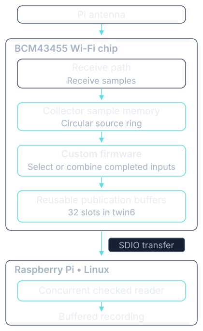
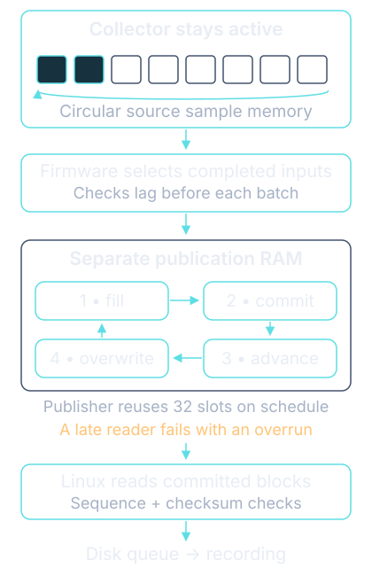
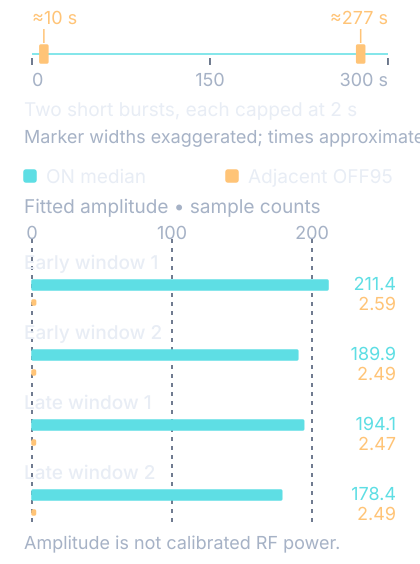
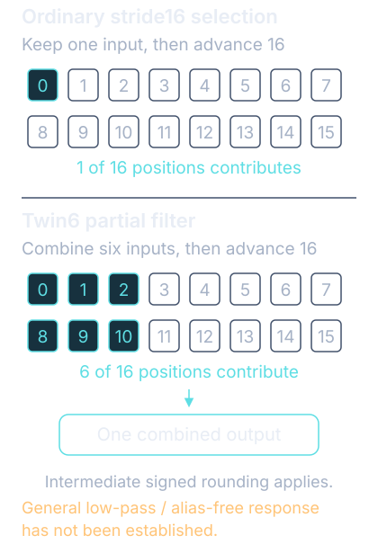

Raspberry Pi 5 · Experimental receive research
A closer look at the radio inside your Pi.
Streaming selected radio samples from the onboard Wi-Fi chip.
Wi-Fi normally delivers decoded packets. Radio samples let us study the signal itself. With custom firmware and a Linux driver, we exported selected complex receive samples from the Pi 5’s BCM43455 chip while its collector stayed active.
One checked recording lasted an hour and delivered three billion selected complex samples. A separate five-minute test detected two short transmissions from a known source.
See the measured result
How this relates to ESP-SDR.
This project was inspired by ESP-SDR and its work exposing received waveforms on Espressif chips, including continuous streaming. We explored the same broad idea using the Raspberry Pi 5’s Broadcom Wi-Fi chip.
The chip already had a diagnostic sample-capture mechanism. We adapted it into sustained, checked export to Linux using small, reusable buffers. We have not established a first-ever discovery of radio-sample access.
We have demonstrated experimental sample streaming with an audited one-hour recording. Making it a practical general-purpose receiver is the next stage: filtering, calibration and continuous protocol decoding still need work.
01 / The mechanism
Small buffers.
A much longer recording.
A finite diagnostic capture fills memory, stops, and then hands the samples to the host. This implementation reads completed positions while the collector is still writing. It does not need a decoded Wi-Fi packet for each exported block.
Custom firmware selects or combines input samples and publishes them in reusable buffers. Linux reads completed blocks through the chip’s existing SDIO connection, then records them to disk. The hour-long recording and separate source demonstration use 32 publication slots.
Sequence numbers and checksums help detect delivery errors. Timeout and stop checks keep each session bounded. Slow-reader failures are reported rather than silently accepted.
The samples are pairs of numbers describing the received signal, often called complex or I/Q samples. Their exact physical I/Q orientation is not calibrated.

02 / Longer checked delivery
An hour from small, reusable buffers.
The receiver ran for an hour with a revised clock read and the same partial filter. Its reader kept recording completed blocks as the chip reused its memory.
- Delivered samples
- 3,000,238,080
- Checked frames
- 2,929,920
- Host receipt span
- 3600.316538804 seconds
Every delivered frame passed the saved sequence and checksum audit. The capture stopped normally, its newest retained tail matched the stopped reference, and the receiver remained healthy. An earlier ten-minute trial passed the same checks with the previous ABI36 implementation.
The audit also followed the raw-position values across 11 counter rollovers. This checks a boundary that the earlier twin6 five-minute trials had not reached; it does not independently locate every physical input sample.
This was a passive recording. It did not contain the two deliberate source bursts shown below. One accepted hour extends the demonstrated duration; other workloads and longer operation still need testing.
Inspect the duration aggregates03 / Separate signal evidence
A known signal, early and late.
In the selected known-source test, an ESP32-C3 emitted two short bursts during one five-minute receiver session. The receiver gain and capture configuration stayed unchanged.

80/80
Analysed signal chunks passed the preset test.
The weakest ON chunk exceeded its adjacent OFF reference by 26.7 times in fitted amplitude, against a tenfold requirement. The reference is the 95th percentile of adjacent source-off fits.
- Delivered samples
- 250,019,840
- Checked frames
- 244,160
- Host receipt span
- 300.025 seconds
Every delivered frame passed the saved sequence and checksum audit. The capture stopped normally and its retained tail was checked. These checks establish delivered-output integrity within the tested session.
The transmitter was off between the two bursts. This result establishes early and late source correlation; it does not establish a known signal at every moment of the recording.
Inspect the result dataEarlier full-rate finite recordings also contain real on-air Wi-Fi: a separate offline replay recovered twelve complete frames with valid checksums. That is evidence of real reception in those older records, not packet decoding in this reduced-rate hour-long stream.
04 / Understanding the output
A stream of selected samples.
The chip produces more input data than this implementation exports. The simplest tested path keeps one position out of every sixteen. Later paths combine several inputs before advancing sixteen positions.
The hour-long recording used the twin6 partial filter and delivered about 833,000 complex samples per second. This is an approximate host delivery cadence, not a calibrated radio clock or a measured usable bandwidth.
Combining inputs can reduce some unwanted frequency content. These short filters still leave alias exposure: signals outside the intended band can fold into the output. A clean, calibrated receiver passband remains a research question.

05 / Current boundaries
A research prototype.
What the tests support
One-hour delivery of selected complex samples, checked buffer reuse and raw-position rollover. Two source bursts were detected in a separate five-minute demonstration.
What remains open
Complete-input physical continuity, calibrated tuning and clocks, converter resolution, comprehensive alias rejection and reliability beyond the tested workloads.
What you can reproduce
Separate source recipes reproduce the historical ABI36 builds and the newer ABI37 firmware and complete driver in their documented environments. Offline tools check supplied frames and aggregate results. The full installation, acquisition and recovery controller remains private.
The tested configuration changes ordinary Wi-Fi operation. Hardware acquisition is not yet turnkey. Original ambient recordings and proprietary firmware binaries are excluded from the package.
06 / Go deeper
Choose your level of detail.
The mechanism and evidence
Methods, tested configurations, measured results and practical limitations.
Implementation appendixThe exact contract
Memory ownership, integer arithmetic, frame layout and lifecycle checks.
Source and build notesRebuild the historical implementation
Tested inputs, source availability and build-only reproduction.
GitHub repository ABI37 source and exact build notes Download the report PDF